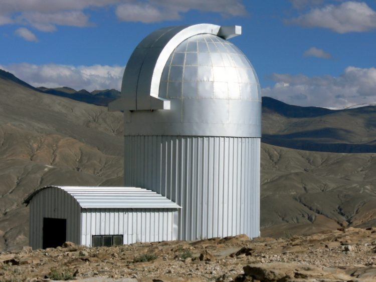

ОБСЕРВАТОРИЯ НАТСКИ
2001
Она расположен неподалеку от индийского города Пуна. Этот крупнейший из работающих в метровом диапазоне радиотелескопов состоит из тридцати антенн с 45-метровыми отражателями весом около 80 тонн каждый. 14 антенн расположены на площади в 1 квадратный километр, а остальные 16 образуют Y-образную конфигурацию протяженностью в 25 километров.
Математическая обработка информации по 435 возможным парам комбинаций расположения тарелок позволяет ученым утверждать, что эта система интерферометров эквивалентна по эффективности одной тарелке диаметром в 25 километров. Однако вычисление корреляций занимает несколько часов.